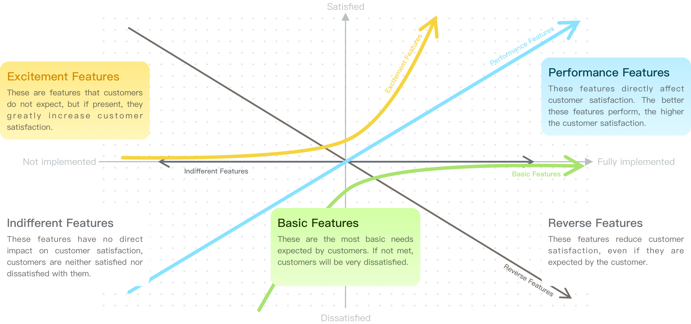
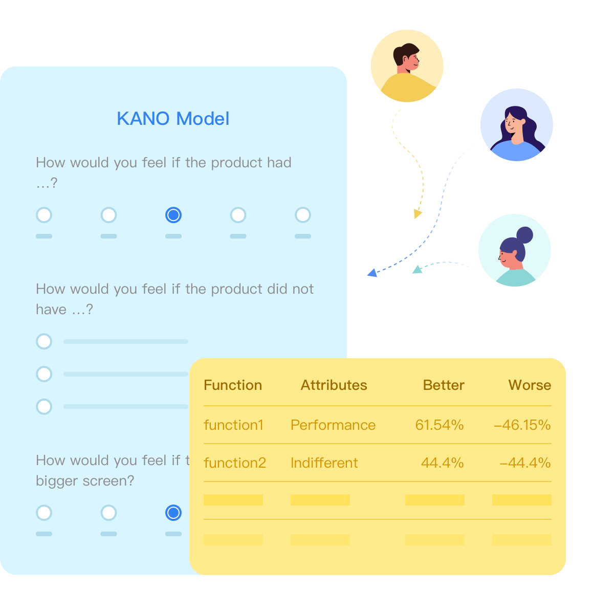

KANO Model ---- Optimizing Product Features
to Increase Customer Satisfaction
The KANO model is a practical tool for understanding and categorizing customer needs and prioritizing them. It is designed to analyze the impact of user
requirements on user satisfaction, with the aim of enhancing customer satisfaction. Additionally, it assists businesses in identifying key features of a product or
service and optimizing product design.
requirements on user satisfaction, with the aim of enhancing customer satisfaction. Additionally, it assists businesses in identifying key features of a product or
service and optimizing product design.
Create Now
Product features can be divided into five categories
Through the KANO model, companies can understand which features are key to increasing customer satisfaction, which are basic needs, and which
may be the cause of customer dissatisfaction, thereby better designing and improving products.
may be the cause of customer dissatisfaction, thereby better designing and improving products.

Effects of Using the KANO Model
Increase Customer Satisfaction
By identifying and optimizing key product features, the KANO model helps to improve customer satisfaction.
Reduce Product Development Costs
The KANO model can help companies determine which features are most important to customers, thereby optimizing resource allocation and reducing development costs.
Enhance Market Competitiveness
Understanding and meeting customer needs is key to improving market competitiveness. The KANO model helps companies better meet customer needs, thereby enhancing competitiveness.
Implementation Steps of the KANO Model

Design a Questionnaire
Design a questionnaire autonomously and flexibly, referring to the question pattern of the KANO model. The questionnaire should include a pair of questions for each feature: one to assess customer satisfaction when the feature is present, and another to assess customer dissatisfaction when the feature is absent.
Collect Customer Feedback
Distribute the questionnaire to a representative sample of your target customers and collect their feedback. You can collaborate with sample service providers for efficient recovery of responses.
Analyze the Data
No complex manual calculations are required; accurate results can be obtained with a single click. For each feature, categorize customer feedback into five KANO categories: basic needs, performance needs, excitement needs, indifferent needs, and reverse needs. Calculate the percentage of feedback for each category.
Implementation Steps of the KANO Model
Plot the KANO Chart
Automatically calculate key data such as KANO attributes, Better coefficients, Worse coefficients, etc. Gain insights to guide product development and improvement work from these calculations. Allocate resources to address the most important features, thus enhancing customer satisfaction.
Case Study ---Smartphone Manufacturer
A certain smartphone manufacturer wants to understand the customers' needs for the new model of the phone in order to formulate the most effective
product strategy. They decided to use the KANO model for research.
product strategy. They decided to use the KANO model for research.
First, they listed some possible product features, including screen size, battery life, camera quality, processor speed, and price. Then, through a survey questionnaire, they asked customers about their expectations and satisfaction with these features.
Through this research, the company understands which features can most improve customer satisfaction, which features are necessary, and which features may reduce satisfaction. This helps the company formulate a more effective product strategy, optimize resource allocation, and enhance competitiveness.
Screen Size
Most customers have certain expectations for the screen size, but they do not think that a larger screen will bring higher satisfaction. This is a performance requirement.
Battery Life
Customers have high demands for battery life, and a longer battery life will significantly improve their satisfaction. This is an excitement requirement.
Camera Quality
Although customers expect a certain quality of the camera, a high-quality camera will not significantly improve their satisfaction. This is a basic requirement.
Rocessor Speed
Most customers do not have clear expectations for the processor speed, but a faster processor speed will significantly improve their satisfaction. This is a latent requirement.
Price
Most customers have clear expectations for the price, and a higher price will significantly reduce their satisfaction. This is a reverse requirement.
Create Now